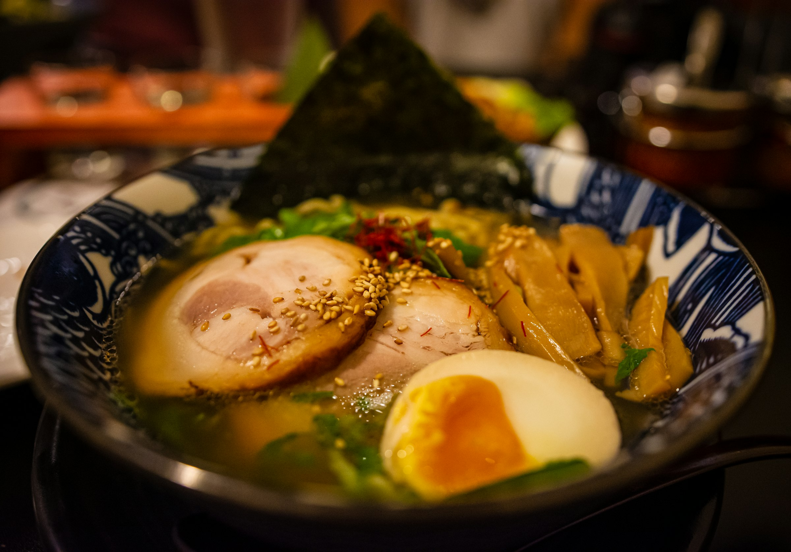
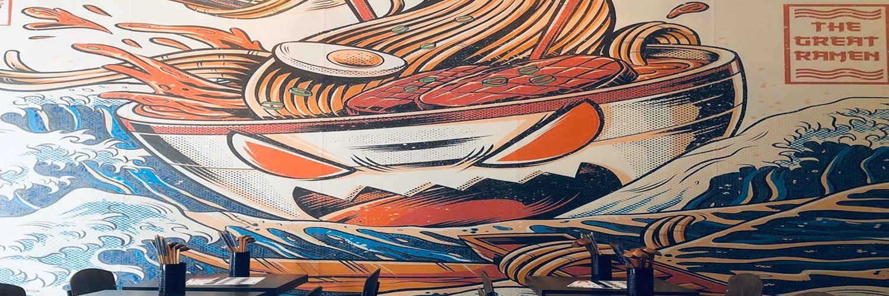
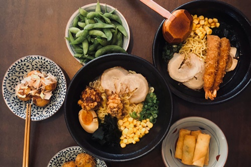
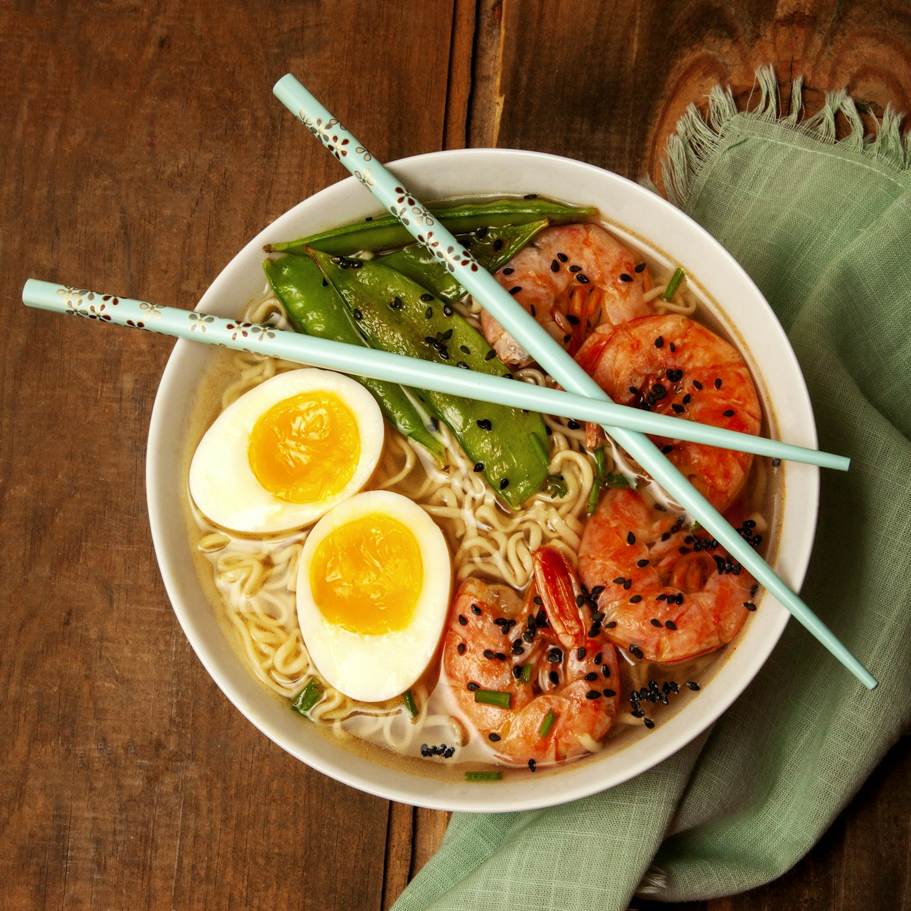
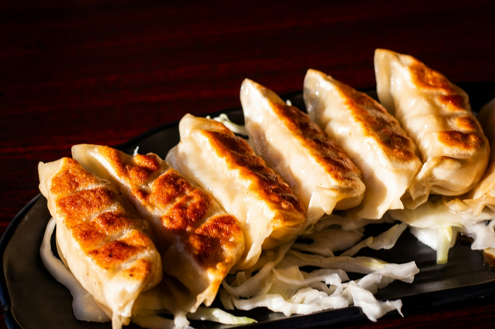

Shibui
Sapporo ramen in Nijmegen. Laat je kom bezorgen of haal hem zelf op aan de Augustijnenstraat.
Een warme kom ramen, thuis of om mee te nemen.
Bij Shibui




Bezorgen we bij jou?
Vul de vier cijfers van je postcode in.
Onze bezorgpostcodes
- 6511
- 6512
- 6515
- 6521
- 6522
- 6523
- 6524
- 6525
- 6531
- 6532
- 6533
- 6541
- 6542
- 6543
- 6544
- 6663
Woon je erbuiten? Bestel online en kies afhalen.
Openingstijden
| Maandag | 14.00 – 21.00 |
|---|---|
| Dinsdag | 14.00 – 21.00 |
| Woensdag | 14.00 – 21.00 |
| Donderdag | 14.00 – 21.00 |
| Vrijdag | 12.00 – 21.00 |
| Zaterdag | 12.00 – 21.00 |
| Zondag | 12.00 – 21.00 |
Contact
Shibui NijmegenAugustijnenstraat 25C
6511 KD Nijmegen
024 750 29 71info@shibuiramen.nl
Jobs
Op dit moment hebben we geen vacatures.
Augustijnenstraat 25C
Nijmegen